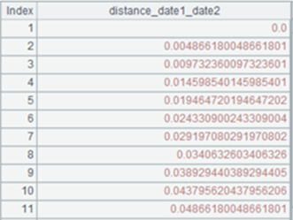

Description:
The external library function (See External Library Guide) generates multiple date difference variables for a datetime table sequence/record sequence variable.
Syntax:
|
P.dateinterval(cns, T) |
During modeling, generate multiple date difference variables for sequence cns of datetime variables and return a binary sequence where the first bit is a table sequence made up of all the derivative variables and the second bit is generation process records Rec; the derivative variables automatically perform subsequent pre-processing |
|
P.dateinterval@r(cns, Rec) |
During scoring, generate a table sequence consisting of multiple date difference variables according to sequence cns of datetime variables and generation process records Rec |
Parameter:
|
P |
A table sequence/record sequence |
|
cns |
A sequence of names of columns (or column numbers starting from 1) of a record sequence |
|
T |
A sequence of target variable values used to perform potential data smoothing |
|
Rec |
A sequence of generation process records |
Option:
|
@bnie |
Each option specifies a target type, and options are mutual-exclusive; automatically judge the type when no option is used; the order of priorities of the options is binary, numeric, integer and enumerated |
Return value:
A sequence/table sequence
Example:
|
|
A |
|
|
1 |
=T("catering_sale.csv").run(date1=date(date1,"yyyy/MM/dd"),date2=date(date2,"yyyy/MM/dd")) |
|
|
2 |
=A1.(sales) |
|
|
3 |
=A1.dateinterval@n(["date1","date2"],A2) |
Generate difference between ¡°date1¡± and ¡°date2¡±, and perform smoothing according to target variable A2. A3(1) A table sequence of derivative variables; A3(2) Generation process records Rec. |
|
4 |
=A1.dateinterval@r(["date1","date2"],A3(2)) |
 Generate multiple difference variables between ¡°date1¡± and ¡°date2¡± according to A3¡¯s generation process records Rec. |